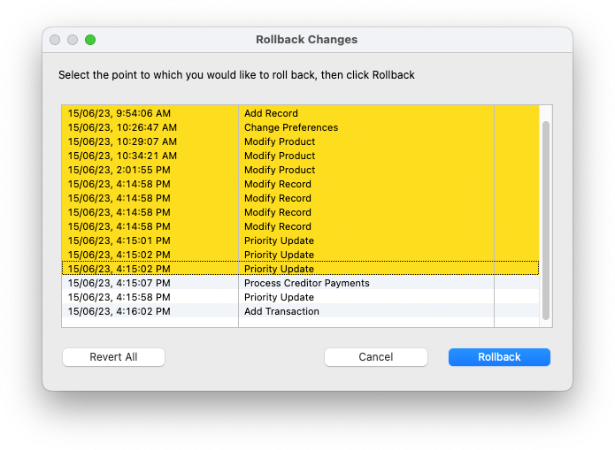
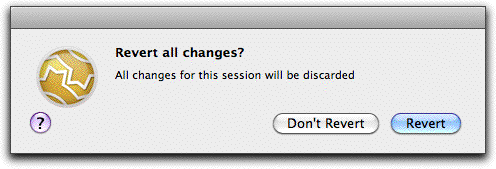
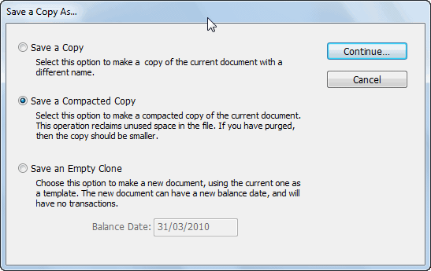
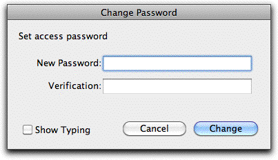
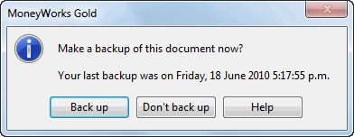
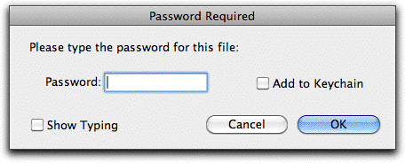
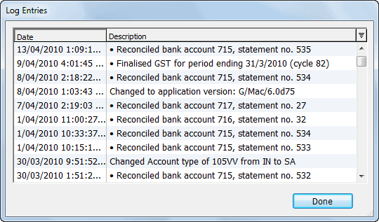
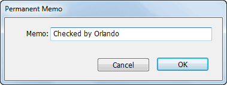

The information you enter into MoneyWorks for a company or entity is kept in a document (also known as a file). Since the document contains vital accounting information, it is important that it is managed properly and backed up regularly.
Open your document from the MoneyWorks Welcome screen by double-clicking it in the Recent Documents list, or by using the Open Other button. Alternatively double-click the document icon in the Finder (Mac) or Windows Explorer.
Note: If you are connecting to a MoneyWorks Datacentre Server or using the MoneyWorks Now cloud service, use the Connect instead of Open Other. See Accessing a shared document
Note: Unless the Multiple Instance MoneyWorks Preference is on you will only be able to open one MoneyWorks document at a time.
Note: MoneyWorks Gold can open any MoneyWorks Cashbook and Express files. However MoneyWorks Cashbook can open a MoneyWorks Gold (or Express) file only if no Gold (or Express) features, such as invoicing, have been used in the file. Similarly Express can open all Cashbook files, but only those Gold files which do not use Gold features (such as multi-currency, departments and inventory).
When you open your document, MoneyWorks makes a copy of it and works on the copy. It does this to protect your information. For example, if it has half- written a transaction to the document and there is a power cut, the integrity of the document would be destroyed. Because you are working on a copy, the original document will survive unscathed if there is a power cut or system failure1.
When you open the document, MoneyWorks also checks the document for internal consistency to ensure that it has not been modified by some outside agency, disk or network error. If a consistency problem is found, you will not be able to open the document, but will need to revert to your latest backup.
If you are using a Mac, your file must be kept on a Mac formatted hard disk. Non-Mac formatted disks, such as Linux or Windows drives, are not supported.
When opening the document, MoneyWorks needs to make a temporary copy of it. The copy will be at least the same size as the original. Hence you will only be able to open your document if there is sufficient free disk space available, i.e. the amount of free disk space must be greater than the size of your document. If there isn’t enough space you will be warned, and will need to clear some space on your disk by deleting old files before you can open your document.
Windows: Normally the temporary copy will not be visible in Windows Explorer because it is created in the Temp directory. However if your document is stored on a volume that does not have a Temp directory, the copy will be created in the same directory as the original document. So if you see a file named something like: “Accounts.temp.moneyworks”. Do not touch it!
The file is automatically saved when you exit MoneyWorks, close the document using the Close document command, or shortly after the last user disconnects.
If you are the only user, you can force a save of your file, by using the Save command—this will safely update the original document with your changes. To remind you to save, you can set the automatic prompt in the Saving Preferences so that a regular reminder message is given.
To save your document:
The document will be saved for you. Depending on the size of your document, this may take a few seconds.
The save command is not always available—it is disabled for example, if you are in the middle of entering a transaction or doing a bank reconciliation.
Note: If you are creating or modifying a custom report, an analysis report, or a form, the save command will save the report/form, and not the document.
Unless the Multiple Instance MoneyWorks Preference is on, you will only be able to have one MoneyWorks document open at a time. If you are working on one document and wish to start using another, you need to first close your current document and then open the new one.
To close the current document:
The document will closed and the MoneyWorks welcome screen will be displayed. Any changes made to the document are automatically saved when the document is closed.
To open the new document:
The standard File Open dialog box will be displayed. You will need to locate your file in this and open it in the normal manner.
To open a recently used document:
or: Right Click on the Welcome screen and choose the document
You can revert your document to the last saved version, or (if you have the Enable Rollback and Crash Recovery File Preference option set, restore it to a particular point in time since the last save. This is useful if you find you have made some catastrophic error, such as posting heaps of incorrect transactions or inadvertently deleting all your customers.
To rollback your file:
You will be presented with a list of changes made since you opened (or last saved) the document.

The changes after this will not be highlighted.
In the above example, we are restoring everything to as it was before we processed the creditor payments.
Click Rollback
Your document will be closed and re-opened, and the changes up to the nominated point restored. Changes after this are discarded.
Note: You can only Rollback once, so you need to “get it right” the first time.
If you want to revert your document to how it was when you opened it (or last saved), click Revert All.
To revert your document:
You will be asked for confirmation.

Click Revert
Your document will revert to how it was when you opened it or when you last saved it. Any changes you have made will be discarded.
As you work with your document, adding transactions, customers and so forth, the size of your document will increase. The size will be roughly determined by the amount of information stored in the document. Most MoneyWorks documents are less than fifty megabytes, but (if you have a lot of information), there is no reason why your document size can’t expand to a couple of gigabytes
or more2.
There are two ways of restricting the size of your document:
Purging: Use the Purge feature in the period maintenance to remove transactions from old periods. The space taken by these old transactions will be used by new transactions, so your document size will not grow unduly until all the space used by the old transactions is reused — See Purging a Period.
Unless your transaction volume is unusually large, you should not need to purge for several years.
Compacting: When you have purged you can release the space taken by the purged transactions and hence reduce the file size. This will make opening and saving faster.
Note: You cannot compact a file if you are Datacentre or MoneyWorks Now client. Instead, save a backup of the file to your local hard drive using File>Save a Backup As..., then open that backup file and follow the instructions below (and, having compacted the file, upload it back to the server again if need be).
To compact a file:
The Save a Copy As window will be displayed.

Set the Save a Compacted Copy option and click Continue
The standard File Creation dialog box will open.
The name must not be the same as the current file.
A new, compacted file will be created with the new name—this may take some time. This operation is only worthwhile if you have purged a period or otherwise deleted a large number of records.
In MoneyWorks Cashbook and Express, you can protect the information in your document from casual prying eyes by giving the document a password.
Note: MoneyWorks Gold and Datacentre have extensive security options so that user access can be limited to specific functions (e.g. Salespeople can only put in orders). These users should refer to Users and Privileges.
The Change Password window will open

Click the Show Typing check box if you want to be able to see what you are typing, otherwise the characters you type are not shown.
Repeat the new password in the Verification field
If the password you type in here is not identical to the one typed into the New Password field, the Change button will be dimmed.
Note: Once you close the document, you will only be able to open it if you type in the password, so do not forget your password3.
The Enter Password window will be displayed—you cannot alter passwords unless you know the Document password.
The Change Password window will open.
Enter the new password into the New Password and Verification fields
Click Change
The Enter Password window will be displayed—you cannot remove passwords unless you know the Document password.
The Change Password window will open.
You will be warned that you are about to remove the password.
Click OK
When you open a document which has a password, you must enter the password before the document will open (in Gold you will also have a User Name).


If the password is incorrect, an alert box follows. You will need to open the document again and re-enter the password. Note that, if you enter the Order Entry password, you will only get limited access.Add to Keychain: For Mac only, if you set this option the Password will be added to your keychain. In future, if you have logged into your Mac using your keychain, you will not need to re-enter this password to gain access to your MoneyWorks document.
Show Typing: If set, your password will show as plain text.
Your MoneyWorks document contains vital information about your business, and for this reason it could be catastrophic if the file is lost or damaged. Hence it is essential that you back up the file regularly.
By backing up, we mean take a copy of the file off your computer and store it in a safe place. If your computer is stolen, gets submerged in a flood or is otherwise made inoperable you will at least have a reasonably up-to-date copy of your accounts (so you can still chase up those people who haven’t paid their invoices).
Automatic Reminders: MoneyWorks can remind you to back up when you close your document—you can set the frequency of reminders to Daily, Weekly or Monthly in the Saving Tab of the MoneyWorks Preferences. See Automatically Prompt for Backup.
Click Back Up to backup your document
The Standard File Save dialog will be displayed.
MoneyWorks has inbuilt backup to compress your file and create a backup copy. The resultant file is called an mwgz file, and has the suffix .mwgz. It can be read on both Windows and Mac computers.
If you have made any changes in your document, you will be prompted to save—the file must be current before you back up.
The Standard File Save dialog will be displayed. Use this to select where the backup copy should be saved, the format (with or without the Custom Plug- ins folder and—if downloading from a server—image attachments), and what name it will have. The name will default to that of your current document, with the date encoded in square brackets in the form [yymmdd].
The compressed file will be between one-fifth and one-third of the size of the original.
Note: The backup should normally be saved on a removable device (e.g. CD, zip disk) that can be taken off-site. There must be sufficient room on the device for the compressed backup copy—MoneyWorks will not split the file across multiple disks.
Note: Your MoneyWorks Custom Plug-ins folder (which contains your reports and forms) can also be backed up by choosing Accounts Backup with Custom Plug-ins from the Format pop-up (Mac) or the Save as type pop-up (Win) in the standard File Save dialog box.
Note: The backup file, if re-opened, will share any current MoneyWorks services with the original file.
We recommend that you take frequent backups, and always ensure that a recent backup is held off-site. Depending on the volume of transactions, you might want to take a backup every day, or at the end of every week. In either situation, you should have several backup disks that you rotate—you should never be backing up onto the same disk as you used last time.
When the backup disk fills up, you should delete the oldest backup on it. You can tell at a glance which is the oldest because MoneyWorks has helpfully dated the backup for you.
You can email a backup copy of your MoneyWorks file by using the Accountant’s Export command, and setting the Email To option. A backup copy will be created as an attachment to a new email in your Out box.
To restore a backup copy made using the Backup command:
The standard file open dialog box will be displayed—use this to locate and open your file.
Note: Never open a MoneyWorks file directly from a USB flash drive, which are slow and prone to corruption. Always copy the file to the hard drive first.
Note: The restored file is automatically opened for you, unless you already have a document open (in which case close your current document and use the File>Open command to open it).
Note: The MoneyWorks Custom Plug-ins folder will also be restored if it was saved as part of the backup. This may overwrite the current one.
MoneyWorks maintains an internal Log File that provides an audit trail of major events in the life of your document—this includes any structural changes made to your chart of accounts, as well as routine accounting operations performed (bank reconciliations, debtor aging, and GST finalisation).
To view the log file:
The log file will be displayed.

This is a normal MoneyWorks list, and can be sorted and printed4.
You can add a short comment to the log file. Once added, the comment cannot be edited or removed (it is part of the audit trail).
To add a comment to the Log file:
An Add... button will appear in the bottom left of the Log window
The Permanent Memo window will be displayed.

The memo can be up to 25 characters long. If you need to make a longer entry, spread it over several memo entries.